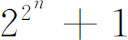

7．数论
实际事务的需要促使人们在计算上、在符号体系上和在方程的理论上取得进展，而对纯数学问题的兴趣则重新引起在数论方面的研究。这门学科当然是古希腊人开头研究的，丢番图又增添了不定方程的问题。印度人和阿拉伯人至少没有使这门学科湮没无闻。虽然前述文艺复兴时代几乎所有的代数学家都在数论方面作出一些猜测和指出一些事实，但第一个对数论作出广泛可观的贡献并给这门学科以巨大推动力的欧洲人是费马（1601—1665）。
费马出身于商人家庭，在法国图卢兹（Toulouse）学法律并以当律师谋生。他一度是图卢兹议会的顾问。虽然数学只不过是费马的业余爱好，而且他只能利用闲暇来研究，但他对数论和微积分作出了第一流的贡献，他是坐标几何的两个发明者之一，并且（如前所述）同帕斯卡一起开创了概率论的研究工作。同他那个世纪的所有数学家一样，他研究了许多科学问题，对光学作出了不朽的贡献：费马极小（时间）原理（第24章第3节）。他的大多数工作是通过他写给朋友的信件闻名于后世的。他只发表了很少几篇论文，但有些书和论文是在他死后刊印发表的。
费马认为数论被人忽视了。他有一次抱怨说几乎没有什么人提出或懂得算术问题，并提出：“这是不是由于迄今为止，人们都用几何观点而不是用算术观点来处理算术的缘故？”他说甚至连丢番图也颇受几何观点的束缚。他相信算术有它自己的特殊园地：整数论。
费马在数论上的工作决定了在高斯作出贡献之前这门学科的研究方向。费马的出发点是丢番图。后者的《算术》曾被文艺复兴时代的数学家翻成许多译本。1621年梅齐利亚克出版了希腊文版和拉丁文译本。费马手头有的就是这个版本，他的大部分结果都是由他记录在书页空白处的（不过有很少几个结果是通过给朋友的信传出去的）。1670年费马的儿子出版了附有他页边笔记的这本书。
费马提出了数论方面的许多定理，但只对一个定理作出了证明，而且这证明也只是略述大意。18世纪的最出色的数学家曾努力想证明他所提出的结果（第25章第4节）。这些结果被证明都是正确的，只有一个是错的（以后即将指出），其中还有一个迄今尚未证明的著名“定理”，所有迹象都说明它可能是成立的。［此即费马大定理，1994年被英国数学家怀尔斯（Andrew Wiles，1953— ）证明，后面还会提及。——译者注］他无疑具有伟大的直观天才，但若要说他已证明了他所指出的所有结论则未必可信。
1879年在惠更斯的故纸堆中发现一个文件，其中叙述了一个著名的方法——无限下推法（the method of infinite descent），这是费马首创和应用的一个方法。为说明这个方法，我们来考察费马在1640年12月25日给梅森（Marin Mersenne，1588—1648）的信中所提出的一个定理：形如4n＋1的一个质数可能而且只能以一种方式表达为两个平方数之和。例如17＝16＋1，29＝25＋4。应用这一方法时，我们要证，若有形如4n＋1的一个质数并不具有所需性质，那就将有形如4n＋1的一个较小质数也不具有那个性质。于是，由于n是任意的，所以还必须有一个更小的。这样通过n的正整数值往下推就必定能推到n＝1，从而推到质数4·1＋1＝5。于是5就不能具有所需性质。而由于5能以唯一方式表达为两个平方数之和，因而每个形如4n＋1的质数都能这样表达。费马在1659年把他这个方法的梗概写信告诉他的朋友卡卡维（Pierre de Carcavi，卒于1684年）。费马说他用这方法证明了上述定理，但后人从未找到他的证明。他又说他用这个方法还证明了其他一些定理。
无穷下推法和数学归纳法不同。第一是这方法并不要求我们验证出哪怕是一个例子来说明所说定理成立，因为我们可以根据n＝1时的情况只会导出与某一其他已知结果相矛盾的这一事实来作出论断。还有，在对一个n值作了适当的假定后，这方法证明，还有一个较小的但未必就是次小的n值，也能使所作假定成立。最后一点是，这方法否定了某些论断，所以事实上它在这方面是更为有用的。
费马又断言没有一个形如4n＋3的质数能表达为两个平方数之和。费马在他的丢番图书页上的侧记中以及在写给梅森的一封信中，推广了著名的直角三角形的3，4，5关系，指出了如下一些定理：形如4n＋1的一个质数能够而且只能作为一个直角边为整数的直角三角形的斜边；（4n＋1）的平方是两个而且只有两个这种直角三角形的斜边；它的立方是三个而且只有三个这种直角三角形的斜边；它的四次方是四个而且只有四个这种直角三角形的斜边如此等，乃至无穷。例如，我们来看n＝1的情形。这时4n＋1＝5，而3，4，5是一个而且只有一个以5为斜边的直角三角形的边。然而以52为斜边的则有两个而且只有两个，它们的边长分别是15，20，25及7，24，25。又以53为斜边的直角三角形有且仅有三个，它们的边长分别是：75，100，125；35，120，125；44，117，125。
费马在给梅森的信中说，这4n＋1型的质数和它的平方都只能以一种方式表达为两个平方数之和；它的三次方和四次方都能以两种方式；它的五次方和六次方都能以三种方式如此等，乃至无穷。例如，当n＝1时有5＝4＋1及52＝9＋16；53＝4＋121＝25＋100等。信中接着说：若等于两平方数之和的一个质数乘以另一个也是这样的质数，则其乘积将能以两种方式表达为两个平方数之和。若第一个质数乘以第二个质数的平方，则乘积将能以三种方式表达为两个平方数之和；若乘以第二个质数的立方，则乘积将能以四种方式表达为两个平方数之和如此等，乃至无穷。
费马指出了关于将质数表达为x2＋2y2，x2＋3y2，x2＋5y2，x2-2y2以及其他这类形式的许多定理，它们都是关于质数表达为平方和定理的推广。例如6n＋1型的每个质数可表为x2＋3y2；8n＋1及8n＋3型的每个质数可表为x2＋2y2。一个奇质数（除2以外的每个质数）能且只能以一种方式表为两个平方数之差。
费马所提出的有两个定理被后人称为小定理和大定理，后者又被人称为最后定理。小定理是费马在1640年10月18日给他朋友弗雷尼克·德·贝西（Bernard Frénicle de Bessy，1605—1675）的一封信中传出去的，这定理说，若p是个质数而a与p互质，则ap-a能为p整除。
费马大“定理”是他相信自己已经证明了的。这定理说，对n＞2，xn＋yn＝zn不可能有正整数解。这定理写在丢番图书上丢番图问题（把已给平方数分解为两个平方数之和）的旁边。费马还写道：“然而此外，一个立方数不能分解为两个立方数，一个四次方数不能分解为两个四次方数，而一般说除平方以外的任何次乘幂都不能分解为两个同次幂。我发现了这定理的一个真正奇妙的证明，但书上空白的地方太少，写不下。”可惜的是，费马的证明（要是他真正有的话）从未被人找到过，而后代上百名最优秀的数学家都未能给予证明。费马在致卡卡维的一封信中说他已用无穷下推法证明了n＝4的情形，但并未给出全部证明细节。弗雷尼克·德·贝西利用费马的少量提示，确实在1676年给出了对这一情形的证明，发表在他死后出版的《论直角三角形的数字性质》（Traité des triangles rectangles en nombres）一书中(11)。
这里，我们跨越时代提一下后日的事：欧拉证明了n＝3的情形（第25章第4节）。因定理对n＝3成立，故它对3的任何倍数也都成立；因若它在n＝6时不成立，则将会有这样的整数x，y，z使
x6＋y6＝z6．
但那样就有
（x2）3＋（y2）3＝（z2）3，
从而定理就会对n＝3不能成立。于是我们知道费马定理对无穷多个n值是成立的，但仍不知道它对所有的n值是否都成立。事实上我们只需要对n＝4以及对n为一个奇质数的情形证明这定理就可以了。因若先假定n是个不能被一个奇质数整除的数，那它必是2的一个乘幂，而由于它大于2，所以它必是4或能被4所整除的数。令n＝4m。于是方程xn＋yn＝zn就变成
（xm）4＋（ym）4＝（zm）4．
若定理对n不成立，那它对n＝4也不成立。故若它对n＝4成立，它就对所有不能被奇质数整除的n都成立。若n＝pm而p是个奇质数，则若定理对n不成立，那它对指数p也不会成立。故若对n＝p成立，那它对能为奇质数整除的任何n都成立。
费马确也出过错。他相信他已经解决了那个老问题：列出一个对各种n值都能得出质数的公式。如今不难证明：除非m是2的乘幂，2m＋1不可能是个质数。从1640年起(12)，费马在许多信中提出了这个问题的逆命题，即

表达一系列的质数——虽然他承认他不能证明这个断言。以后他又怀疑这断言的正确性。迄今为止，已知这公式给出的质数只有五个：3，5，17，257以及65 537。（参看第25章第4节。）费马用无穷下推法提出并概括地证明了(13)下述定理：边长为有理数的直角三角形的面积不可能是一个平方数。这个概括的证明是他唯一详细写出的证明，而且是作为x4＋y4＝z4不可能有正整数解的一个推论得出的。
关于多边形数，费马在他的那本丢番图的书上提出了一个重要定理：每个正整数或者本身是一个三角形数，或者是2个或3个三角形数之和；每个正整数或者本身是个正方形数，或者是2，3或4个正方形数之和；每个正整数或者本身是个五边形数，或者是2，3，4或5个五边形数之和；以及对较高的多边形数的类似关系。这些结果只有在我们把0和1都归入多边形数之后才能成立，而证明它们需要做大量的工作。费马声称他用无穷下推法证明了它们。
我们知道完全数是希腊人曾经研究过的，欧几里得还给出了基本的结果：2n-1（2n-1）在2n-1为质数时是个完全数。对n＝2，3，5和7，2n-1之值是质数，故6，28，496及8128是完全数（如尼科马修斯所指出的）。在1456年的一份手稿中正确给出第五个完全数是33 550 336；这是相应于n＝13的完全数。雷吉乌什（Hudalrich Regius）在他的《摘录》（Epitome，1536）中也给出了这第五个完全数。卡塔尔迪（Pietro Antonio Cataldi，1552—1626）在1607年指出2n-1在n为复合数时是复合数，并验证出2n-1在n＝13，17及19时是质数。1664年梅森举出了其他一些完全数。费马也研究过完全数的问题。他考察了什么时候2n-1是个质数，并在1640年6月致梅森的一封信中提出了下面这些定理：（a）若n不是质数，则2n-1也不是质数。（b）若n是质数，则2n-1在可能为他数所整除的情形下只能为2kn＋1型的质数所整除。现今所知的完全数约有30个（截至2013年初已知有48个。——译者注）。至于是否存在奇完全数的问题尚为悬案。
费马在1636年重新发现塔比特第一个提出的法则，给出了第二对亲和数17 296及18 416（第一对亲和数220及284是毕达哥拉斯给出的），笛卡儿在致梅森的一封信中给出了第三对亲和数9 363 584和9 437 056。
费马重新发现了求解x2-Ay2＝1的问题，其中A是整数但非平方数。这问题在希腊人和印度人中间有久远的历史。费马在1657年2月致弗雷尼克·德·贝西的一封信中提出一个定理：x2-Ay2＝1在A是正整数而非完全平方时有无穷多个解(14)。欧拉把这方程误称为佩尔（Pell）方程，这名称流传到今天。费马在同一封信中(15)向所有数学家挑战，要求他们求出无穷多个整数解。布龙克尔勋爵给出了解，但并未证明解有无穷多个。沃利斯则全部解出了这个问题。并在1657年及1658年的信(16)中以及在他的《代数》的第98章中给出了解法。费马又说他能指出：对于给定的A和B，x2-Ay2＝B在什么情况下可解，并能把它解出来。我们并不知道费马是怎样解这两个方程的，尽管他在1658年的一封信中说他是用下推法解第一个方程的。